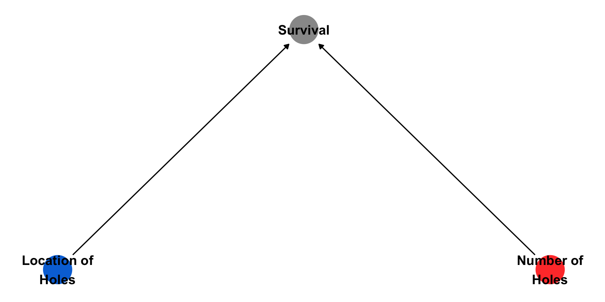
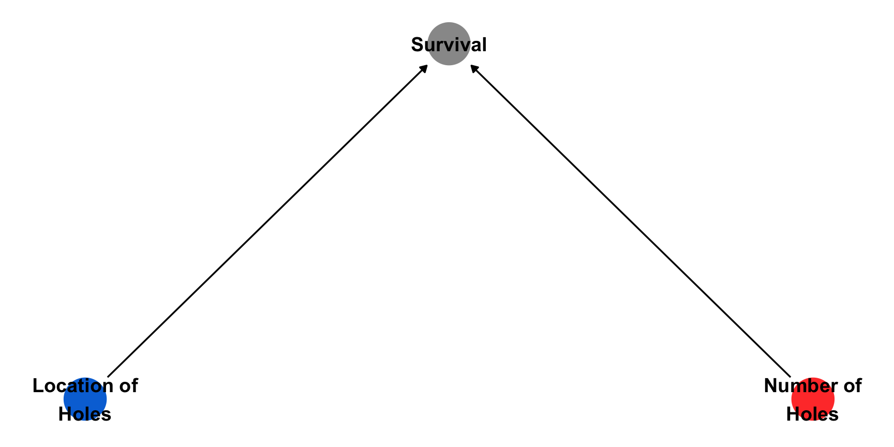

Attaching package: 'ggdag'The following object is masked from 'package:stats':
filter
Descriptive Inference

Attaching package: 'ggdag'The following object is masked from 'package:stats':
filter
In this case, the illusion was the appearance of correlation (or statistical dependence) between the independent causes, giving rise to the theory that some locations receive more bullets than others (perhaps by being more exposed) when in fact the enemy sprayed them uniformly. The army observed more holes in the fuselage than the engine and recommended more armor on the former. This dependence however was created by selection bias.
The subset of individuals chosen for the survey.
It is important that the sample chosen is representative of the population of interest.
Probability Sampling Strategies:
Non-Probability Sampling Strategies:
Simple Random Sampling
To implement random sampling we need a complete list of all individuals in the population (this list is known as sample frame).
Unit nonresponse: even when our sample frame is complete, some individuals may choose not to answer.
Item nonresponse: some individuals may choose not to answer some questions.
Misreporting: some individuals may choose not to answer truthfully.
Convenience sample:
Measuring support for Brexit.
Your final submission will be a publicly available webpage that contains: (1) a brief introduction to your research question and data; (2) a discussion of your research design, its assumptions, and threats to inference; (3) a visualization that describes your data; (4) a presentation of the results from a regression model (as a table or graph) and discussion of its implications for your research question; and (5) a discussion of the implications of your findings for development policy or practice, including the limitations of your analysis and suggestions for future research.
Datasets
| Milestone | Due Date |
|---|---|
| Create a GitHub repository | Feb 8th |
| Identify data source | Mar 5th |
| Submit proposal | Apr 2nd |
| Submit final project | May 2nd |
By April, I’ll give you a break-down of how the grading will be done